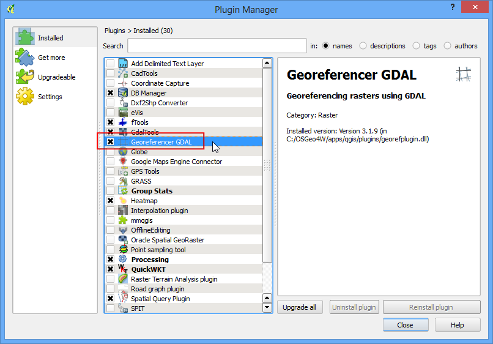

Геоприв’язування топографічних листів та сканованих мап¶
Попередження
This tutorial is now obsolete. A new and updated version is available at Georeferencing Topo Sheets and Scanned Maps (QGIS3)
В більшості проектів GIS необхідно виконати геоприв’язку деяких растрових даних. Геоприв’язування це процес надання координат реального світу кожному пікселю растра. Дуже часто ці координати отримують виконуючи обхід ділянки - збираючи координати із GPS приймачем для декількох об’єктів на зображенні або мапі, які легко ідентифікувати. В деяких випадках, коли ви збираєтесь оцифрувати відскановану карту, координати можна отримати із міток на самій мапі. Використовуючи задані координати або НОТ-ки (Наземні Опорні Точки), зображення буде трансформоване, так щоб відповідати обраній системі координат. В цьому уроці будуть обговорені концепції, стратегії і інструменти в середовищі QGIS, які дозволяють здійснити геоприв’язку з високою точністю.
Огляд завдання¶
Використаємо скановану карту південної Індії 1870 року і виконаємо її геоприв’язку за допомогою QGIS.
Додаткові навички¶
Як визначити датум і систему координат старих мап.
Отримання даних¶
Веб-сайт Hipkiss’s Scanned Old Maps має чудову колекцію вільних для доступу відсканованих мап, які можна використовувати для досліджень.
Завантажте карту південної Індії 1870 року <http://www.hipkiss.org/data/maps/william-mackenzie_gallery-of-geography_1870_southern-india_3975_3071_600.jpg>`_ і збережіть її у вигляді JPG зображення на ваш жорсткий диск.
{kind=link}
Для зручності, ви можете безпосередньо завантажити копію набору даних за допомогою наведеного нижче посилання
{kind=link}
Виконання¶
1.Georeferencing in QGIS is done via the ‘Georeferencer GDAL’ plugin. This is a core plugin - meaning it is already part of your QGIS installation. You just need to enable it. Go to and enable the Georeferencer GDAL plugin in the Installed tab. See Використання додатків for more details on how to work with plugins.
Планіг встановлено в меню Растр. Перейдіть у , щоб відкрити плагін.
Вікно плагіну поділене на 2 секції. Верхня секція де показується растрове зображення і нижня секція де показується таблиця ваших НОТ-ок (наземних опорних точок).
Тепер ми відкриємо JPG зображення. Перейдіть в меню . Виберіть завантажене зображення відсканованої мапи і натисніть Open.
На наступному екрані вас попросять вказати систему координат (СК) для растру. Це необхідно аби задати проекцію і датум ваших контрольних точок. Якщо ви отримали контрольні точки за допомогою GPS приймача, ви будете мати СК WGS84. Якщо ви виконуєте геоприв’язку відсканованої мапи як ця, ви можете отримати інформацію про СК з самої мапи. Дивлячись на нашу карту ми бачимо що дані лише координати Широта/Довгота. Немає інформації про датум, тому ми маємо самостійно підібрати датум, що підходить. Оскільки це Індія і мапа досить стара, датум мапи Еверест 1830 дасть хороший результат.
Ви побачите зображення, яке буде завантажене в верхню секцію.
Ви можете використовувати елементи управління збільшення/прокрутки на панелі інструментів, щоб дізнатися більше про карту.
Тепер нам потрібно призначити координати деяким точкам на цій карті. Якщо ви подивитеся більш уважно, ви побачите координатну сітку з мітками. Використовуючи цю сітку, ви можете визначити координати точок X і Y де перетинаються лінії сітки. Натисніть на панелі інструментів кнопку Add Point.
У спливаючому вікні введіть координати. Запам’ятайте що X=довгота і Y=широта. Натисніть кнопку OK.

Ви побачите, що таблиця опорних точок тепер має рядок із деталями про вашу першу додану НОТ.

Точно так само, додайте принаймні 4 опорні точки, що охоплюють все зображення. Чим більше буде у вас точок, тим точніше ваше зображення буде зареєстроване у цільових координатах.
Як тільки точок буде досить, перейдіть до .
У діалоговому вікні Transformation settings виберіть в полі Transformation type варіант Thin Plate Spline. Назвіть ваш вихідний растр як 1870_southern_india_modified.tif. Виберіть EPSG:4326 в якості цільової SRS, так що вихідне зображення буде в широко сумісних координатах. Переконайтесь що опція Load in QGIS вибрана. Натисніть кнопку :guilabel:`OK.
Поверніться до вікна Georeferencer і виберіть . Це почне процес перетворення зображення з використанням НОТ-ок і створення вихідного растру.
Як тільки процес буде виконано, ви побачите геоприв’язаний шар доданий до QGIS
Геоприв’язка тепер виконана. Але як завжди, є хорошою практикою перевірити свою роботу. Як можна перевірити, що геоприв’язка є точною? В даному випадку, завантажити завантажити шейп-файл кордонів країн із довіреного джерела, такого як набір даних Natural Earth і порівняти їх. Ви побачите, що вони збігаються досить добре. Якщо там є якісь помилки, їх краще виправити додавши більше контрольних точок, зміною параметрів перетворення і спробувавши вибрати інший датум.